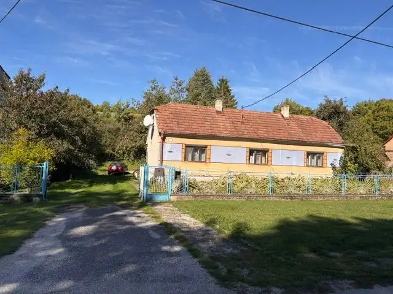
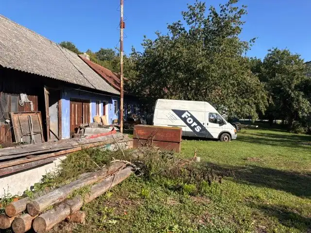
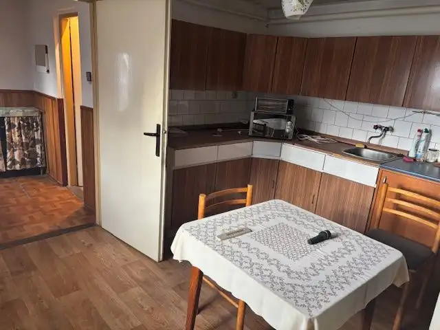
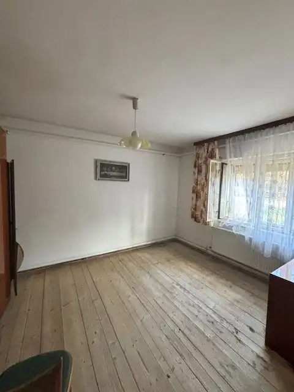
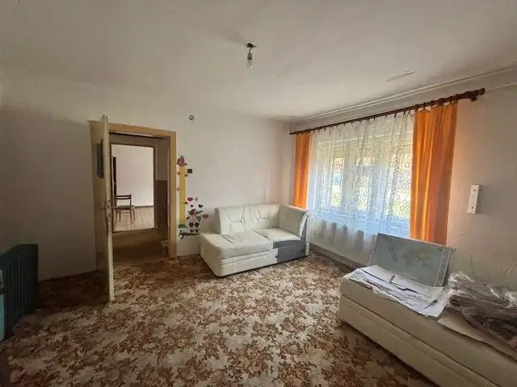
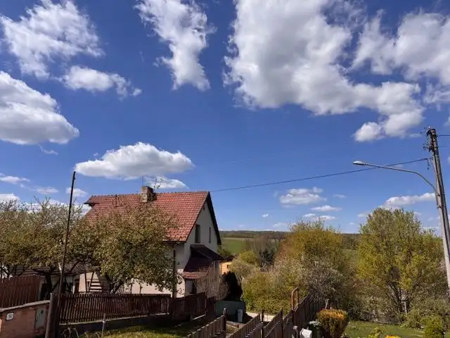
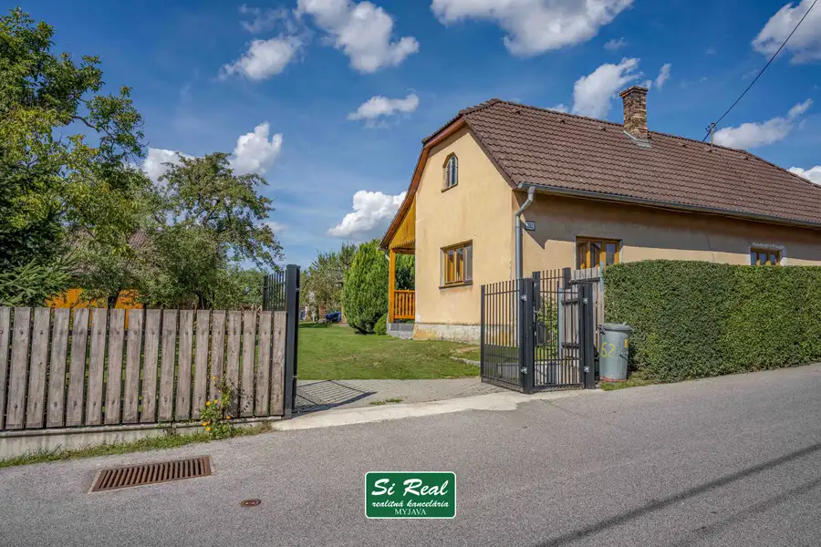
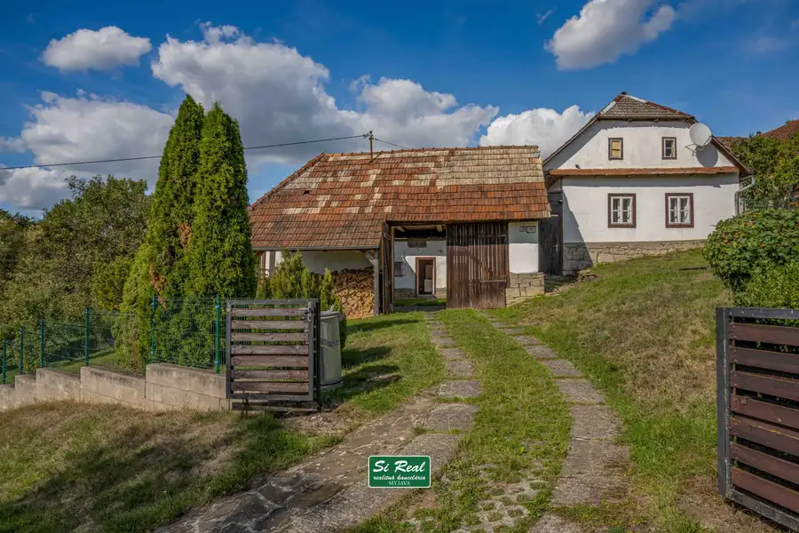

SIREAL MYJAVA - Na predaj rodinný dom v peknom prostredí myjavských kopaníc v obci Chvojnica.
Chvojnica





- Plocha80 m²
- StavČiastočná rekonštrukcia
- VlastníctvoOsobné
O nehnuteľnosti
Ponúkame Vám na predaj rodinný dom v peknom prostredí obce Chvojnica, známej svojou čistou prírodou, tichom, množstvom turistických a cykloturistických trás a skvelými možnosťami na hubárčenie.Dom sa nachádza na priestrannom pozemku o výmere 1460 m², ktorý poskytuje množstvo priestoru na oddych, záhradu aj rodinné aktivity. Je vhodný na trvalé bývanie aj rekreáciu. Prístupová cesta je celoročne udržiavaná a lokalita je vzdialená len 5 km od Vrboviec. Možnosť dokúpenia ďalšieho pozemku!Dispozícia domu:3 izbykuchyňakúpeľňa s WCchodbaveranda2 špajzekotolňahospodárska časťgarážTechnické informácie:elektrina 220/380 Vústredné vykurovanie na tuhé palivovlastná studňažumpaVýhody lokality:nádherné, tiché horské prostrediečistá a pokojná dedinka ideálna na relaxvýborné turistické a cykloturistické trasy v okolískvelé hubárske lokality priamo v blízkosti domumožnosť rozšírenia pozemku podľa potrebyAk hľadáte miesto, kde sa spája komfort bývania s krásou prírody, tento dom je pre Vás ideálnou voľbou!Bližšie informácie Vám radi poskytneme na tel. 0907385201, petrakova@sireal.sk
Parametre
- Druh
- Rodinný dom
- Dátum zverejnenia
- 06. 10. 2026
- Energetický certifikát budovy
- nie je
- Plocha pozemku
- 1460 m²
- Počet nadzemných podlaží
- 1
- Stav nehnuteľnosti
- Čiastočná rekonštrukcia
- Terén pozemku
- Prevažne rovinatý
- Typ
- Predaj
- Typ konštrukcie
- Tehlová
- Vlastníctvo
- Osobné
- Vykurovanie
- Ústredné
- Zastavaná plocha
- 100 m²
- Úžitková plocha
- 80 m²
Kde to je


Mohlo by Vás zaujímať

DomNové 165 000 €Sireal myjava - na predaj rodinný dom v tichej lokalite – Priepasné (okres myjava) po zľave Priepasné 300 m²
Chalupa, rekreačný domčekNové 115 000 €Sireal Myjava - útulná chalupa na Myjavských kopaniciach – Stará Myjava Stará Myjava 100 m²
DomNové 145 000 €Sireal Myjava - chalupa v srdci prírody myjavských kopaníc - Stará Myjava Stará Myjava 100 m²